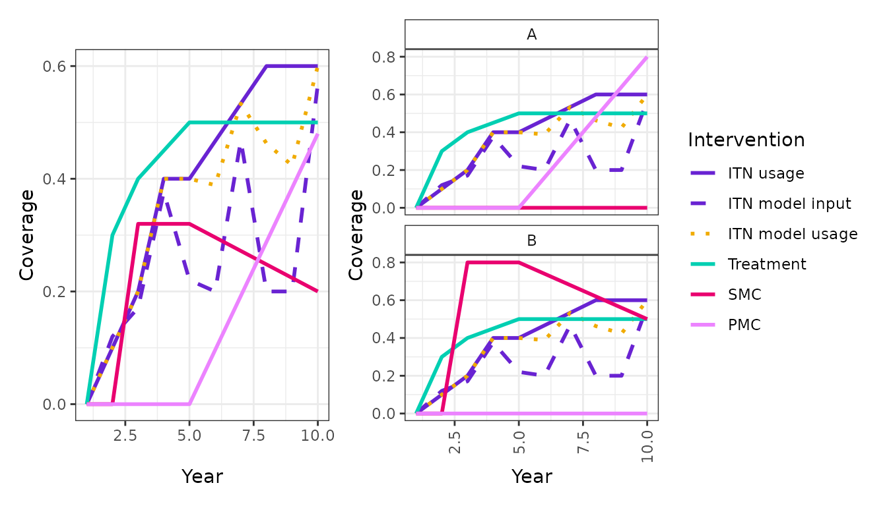

Future scenario
future-scenario.Rmd
library(scene)Using a site file in malariariaverse, we can define a future scenario
by extending and populating the $interventions section for
a site to include future years. Scene provides helpful functions to help
us build our future scenarios.
Let’s start with an example site. We can see the interventions sections has details of the historical intervention coverage for the last 5 years:
| country | site | year | itn_use | itn_input_dist | tx_cov | irs_cov | rtss_cov | smc_cov | pmc_cov |
|---|---|---|---|---|---|---|---|---|---|
| Eg | A | 1 | 0.0 | 0.00 | 0.00 | 0 | 0 | 0.0 | 0 |
| Eg | A | 2 | 0.1 | 0.11 | 0.30 | 0 | 0 | 0.0 | 0 |
| Eg | A | 3 | 0.2 | 0.14 | 0.40 | 0 | 0 | 0.0 | 0 |
| Eg | A | 4 | 0.4 | 0.32 | 0.45 | 0 | 0 | 0.0 | 0 |
| Eg | A | 5 | 0.4 | 0.13 | 0.50 | 0 | 0 | 0.0 | 0 |
| Eg | B | 1 | 0.0 | 0.00 | 0.00 | 0 | 0 | 0.0 | 0 |
| Eg | B | 2 | 0.1 | 0.11 | 0.30 | 0 | 0 | 0.0 | 0 |
| Eg | B | 3 | 0.2 | 0.14 | 0.40 | 0 | 0 | 0.8 | 0 |
| Eg | B | 4 | 0.4 | 0.32 | 0.45 | 0 | 0 | 0.8 | 0 |
| Eg | B | 5 | 0.4 | 0.13 | 0.50 | 0 | 0 | 0.8 | 0 |
We can plot the interventions (aggregated for the country and at the site level) to get an idea of what is going on:
plot_interventions_combined(
interventions = example_site$interventions,
population = example_site$population,
group_var = c("country", "site"),
include = c("itn_use", "itn_input_dist", "tx_cov", "smc_cov"),
labels = c("ITN usage", "ITN model input", "Treatment","SMC")
)
Let’s start by creating a new site file for our new scenario. We also define the grouping variable(s), to inform the sites with in the site file:
new_scenario <- example_site
group_var <- names(new_scenario$sites)We need to expand our $interventions section to some
future years:
# Expand the interventions for each site in the site file up to year 10
new_scenario$interventions <- new_scenario$interventions |>
expand_interventions(max_year = 10, group_var = group_var)After this we can begin to populate “the future” interventions for
our scenario, we can do this be adding target change points in the
$inteventions:
# Add a target ITN usage of 60% in all sites by year 8
new_scenario$interventions <- new_scenario$interventions |>
set_change_point(sites = new_scenario$sites, var = "itn_use", year = 8, target = 0.6)We can define more specific options, restricting sites where changes will be implemented:
# Add a target PMC coverage of 80% in site A
to_get_pmc <- new_scenario$sites[new_scenario$sites$site == "A", ]
new_scenario$interventions <- new_scenario$interventions |>
set_change_point(sites = to_get_pmc, var = "pmc_cov", year = 10, target = 0.8)
# Add a target SMC coverage of 50% to any sites that have previously implemented SMC
to_get_smc <- ever_used(
interventions = example_site$interventions,
var = "smc_cov",
group_var = group_var
)
new_scenario$interventions <- new_scenario$interventions |>
set_change_point(sites = to_get_smc, var = "smc_cov", year = 10, target = 0.5)Now we have defined our targets, we can see there are still missing
values in $interventions:
| country | site | year | itn_use | itn_input_dist | tx_cov | irs_cov | rtss_cov | smc_cov | pmc_cov |
|---|---|---|---|---|---|---|---|---|---|
| Eg | A | 1 | 0.0 | 0.00 | 0.00 | 0 | 0 | 0.0 | 0.0 |
| Eg | A | 2 | 0.1 | 0.11 | 0.30 | 0 | 0 | 0.0 | 0.0 |
| Eg | A | 3 | 0.2 | 0.14 | 0.40 | 0 | 0 | 0.0 | 0.0 |
| Eg | A | 4 | 0.4 | 0.32 | 0.45 | 0 | 0 | 0.0 | 0.0 |
| Eg | A | 5 | 0.4 | 0.13 | 0.50 | 0 | 0 | 0.0 | 0.0 |
| Eg | A | 6 | NA | NA | NA | NA | NA | NA | NA |
| Eg | A | 7 | NA | NA | NA | NA | NA | NA | NA |
| Eg | A | 8 | 0.6 | NA | NA | NA | NA | NA | NA |
| Eg | A | 9 | NA | NA | NA | NA | NA | NA | NA |
| Eg | A | 10 | NA | NA | NA | NA | NA | NA | 0.8 |
| Eg | B | 1 | 0.0 | 0.00 | 0.00 | 0 | 0 | 0.0 | 0.0 |
| Eg | B | 2 | 0.1 | 0.11 | 0.30 | 0 | 0 | 0.0 | 0.0 |
| Eg | B | 3 | 0.2 | 0.14 | 0.40 | 0 | 0 | 0.8 | 0.0 |
| Eg | B | 4 | 0.4 | 0.32 | 0.45 | 0 | 0 | 0.8 | 0.0 |
| Eg | B | 5 | 0.4 | 0.13 | 0.50 | 0 | 0 | 0.8 | 0.0 |
| Eg | B | 6 | NA | NA | NA | NA | NA | NA | NA |
| Eg | B | 7 | NA | NA | NA | NA | NA | NA | NA |
| Eg | B | 8 | 0.6 | NA | NA | NA | NA | NA | NA |
| Eg | B | 9 | NA | NA | NA | NA | NA | NA | NA |
| Eg | B | 10 | NA | NA | NA | NA | NA | 0.5 | NA |
Let’s fill them in! For some interventions we might want coverage to scale up to a target:
# Linear scale up of coverage
new_scenario$interventions <- new_scenario$interventions |>
linear_interpolate(vars = c("itn_use", "pmc_cov", "smc_cov"), group_var = group_var)For others we may just want the previous value to be carried forward:
new_scenario$interventions <- new_scenario$interventions |>
fill_extrapolate(group_var = group_var)Now we have future net usage defined, we need to estimate the model
input net distribution to achieve it. We use the
add_future_net_dist(). Note that this function imposes some
very specific assumptions so make sure you are familiar with
netz::fit_usage() before using!
new_scenario$interventions <- new_scenario$interventions |>
add_future_net_dist(group_var = group_var)Ok, now we should have a populated $interventions:
| country | site | year | itn_use | itn_input_dist | tx_cov | irs_cov | rtss_cov | smc_cov | pmc_cov | fitted_usage |
|---|---|---|---|---|---|---|---|---|---|---|
| Eg | A | 1 | 0.0000000 | 0.0000000 | 0.00 | 0 | 0 | 0.00 | 0.00 | 0.0000000 |
| Eg | A | 2 | 0.1000000 | 0.1100000 | 0.30 | 0 | 0 | 0.00 | 0.00 | 0.0995594 |
| Eg | A | 3 | 0.2000000 | 0.1400000 | 0.40 | 0 | 0 | 0.00 | 0.00 | 0.1968126 |
| Eg | A | 4 | 0.4000000 | 0.3200000 | 0.45 | 0 | 0 | 0.00 | 0.00 | 0.3992001 |
| Eg | A | 5 | 0.4000000 | 0.1300000 | 0.50 | 0 | 0 | 0.00 | 0.00 | 0.4020097 |
| Eg | A | 6 | 0.4666667 | 0.2000000 | 0.50 | 0 | 0 | 0.00 | 0.16 | 0.4443272 |
| Eg | A | 7 | 0.5333333 | 0.3986168 | 0.50 | 0 | 0 | 0.00 | 0.32 | 0.5795560 |
| Eg | A | 8 | 0.6000000 | 0.2000000 | 0.50 | 0 | 0 | 0.00 | 0.48 | 0.5606173 |
| Eg | A | 9 | 0.6000000 | 0.2000000 | 0.50 | 0 | 0 | 0.00 | 0.64 | 0.5482128 |
| Eg | A | 10 | 0.6000000 | 0.3320723 | 0.50 | 0 | 0 | 0.00 | 0.80 | 0.6003455 |
| Eg | B | 1 | 0.0000000 | 0.0000000 | 0.00 | 0 | 0 | 0.00 | 0.00 | 0.0000000 |
| Eg | B | 2 | 0.1000000 | 0.1100000 | 0.30 | 0 | 0 | 0.00 | 0.00 | 0.0995594 |
| Eg | B | 3 | 0.2000000 | 0.1400000 | 0.40 | 0 | 0 | 0.80 | 0.00 | 0.1968126 |
| Eg | B | 4 | 0.4000000 | 0.3200000 | 0.45 | 0 | 0 | 0.80 | 0.00 | 0.3992001 |
| Eg | B | 5 | 0.4000000 | 0.1300000 | 0.50 | 0 | 0 | 0.80 | 0.00 | 0.4020097 |
| Eg | B | 6 | 0.4666667 | 0.2000000 | 0.50 | 0 | 0 | 0.74 | 0.00 | 0.4443272 |
| Eg | B | 7 | 0.5333333 | 0.3986168 | 0.50 | 0 | 0 | 0.68 | 0.00 | 0.5795560 |
| Eg | B | 8 | 0.6000000 | 0.2000000 | 0.50 | 0 | 0 | 0.62 | 0.00 | 0.5606173 |
| Eg | B | 9 | 0.6000000 | 0.2000000 | 0.50 | 0 | 0 | 0.56 | 0.00 | 0.5482128 |
| Eg | B | 10 | 0.6000000 | 0.3320723 | 0.50 | 0 | 0 | 0.50 | 0.00 | 0.6003455 |
Let’s inspect the interventions for our new scenario to confirm our changes have worked as expected:
plot_interventions_combined(
interventions = new_scenario$interventions,
population = new_scenario$population,
group_var = c("country", "site"),
include = c("itn_use", "itn_input_dist", "fitted_usage", "tx_cov", "smc_cov", "pmc_cov"),
labels = c("ITN usage", "ITN model input","ITN model usage", "Treatment","SMC", "PMC")
)
We now have a fully populated new scenario. In reality, there is more
complexity in site file interventions than shown here, but most of the
principals remain the same. Note that the order of operations does
matter - for example you can’t estimate itn_input_dist
before specifying itn_use and you can’t
linear_interpolate() a variable after
fill_extrapolate().